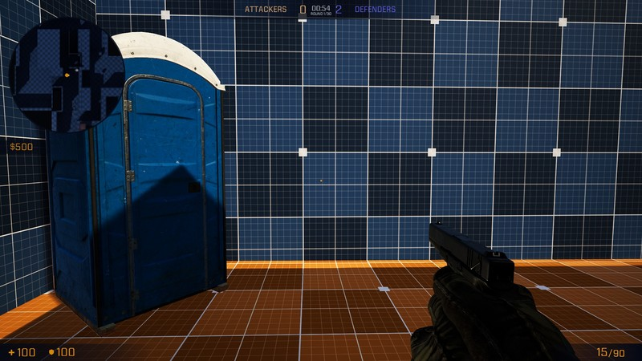
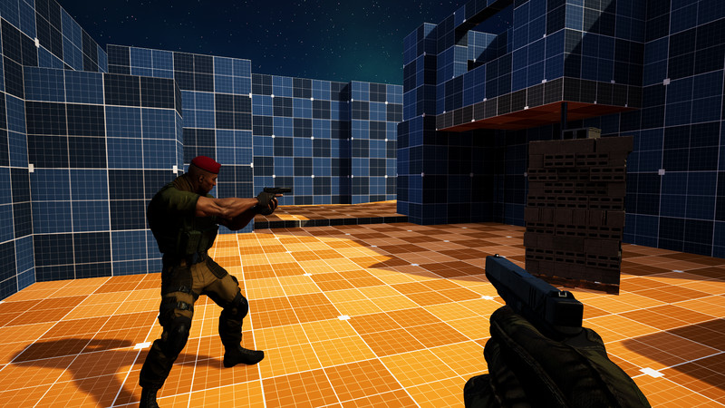
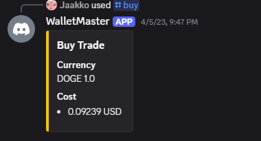
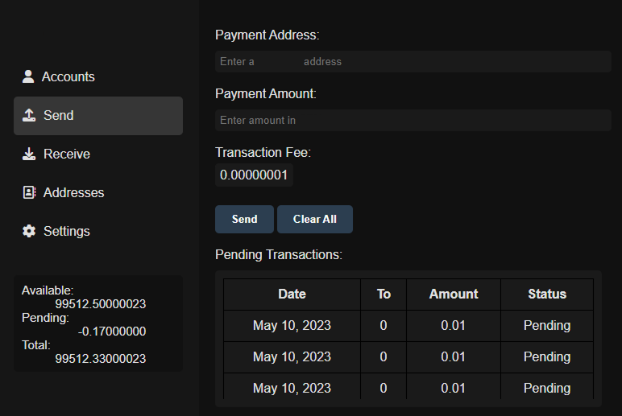
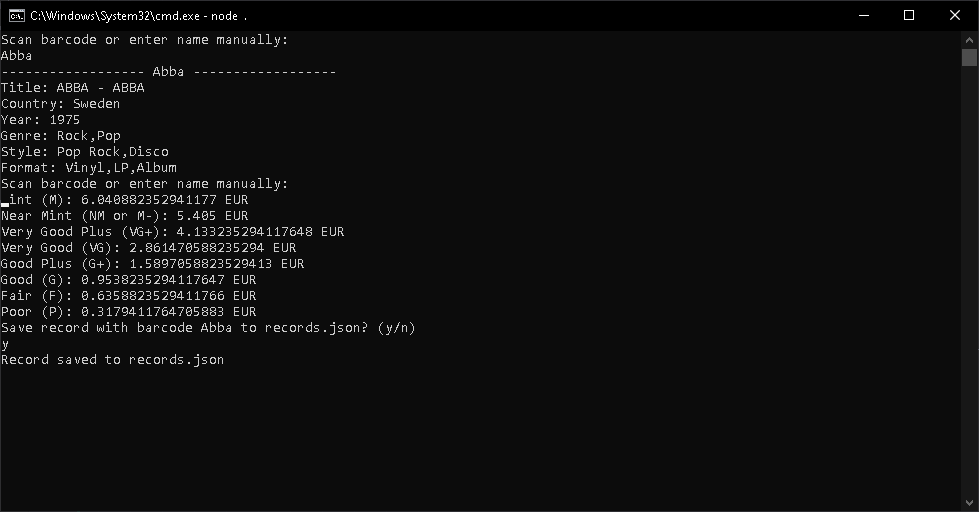
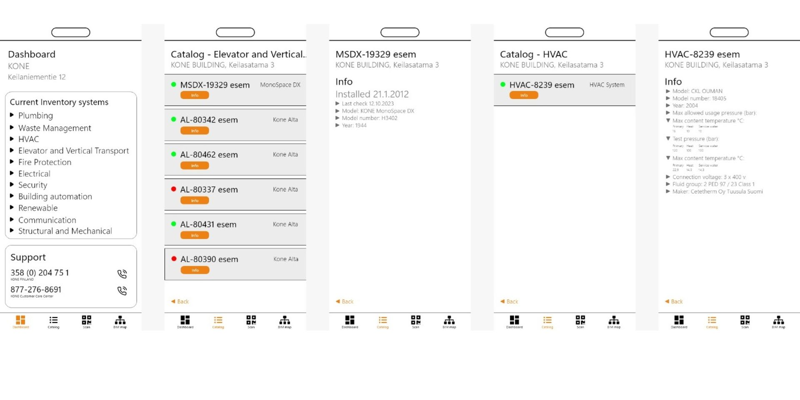
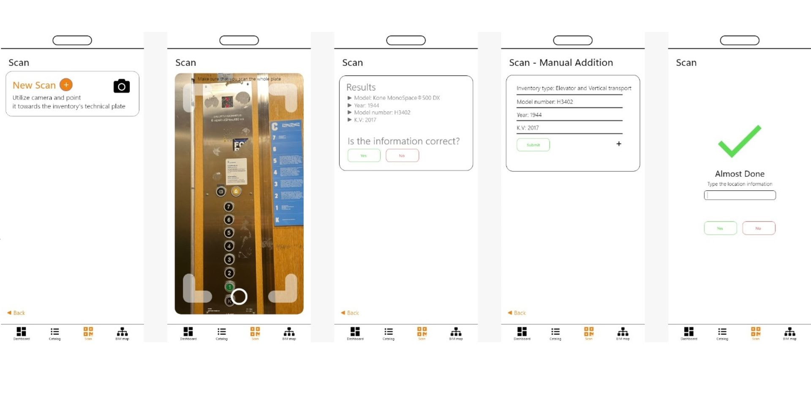
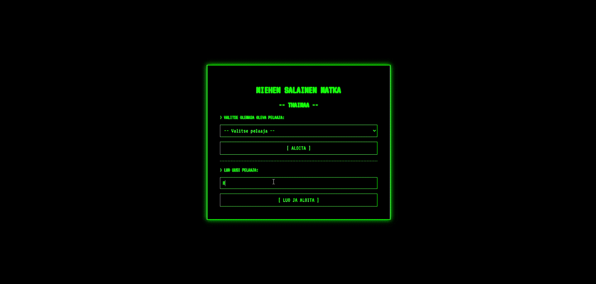
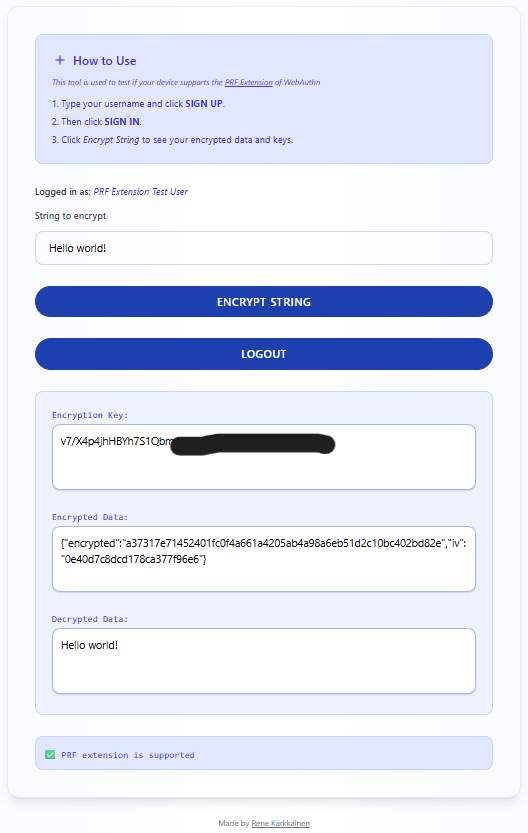

A bit about software
Written by Rene Kärkkäinen on 06.07.2025
Online Multiplayer video game Beryllium
Developing an online multiplayer video game was my first big step into software development. In 2020, I used Unreal Engine 4 to build a simple offline shooter game. At the time, I had already spent thousands of hours playing Counter-Strike, which I started playing when I was nine years old. Due to my love for the Counter-Strike series, I quickly switched to developing a similar online FPS game, which I named Beryllium.
Looking back at some old documents, it turns out I had signed a software distribution agreement with Valve Corporation in June 2020 with the intention of releasing Beryllium on Steam. I doubt those agreements are legally binding since I was only 14 at the time.
Development of the game continued until autumn 2022, when I started studying at Business College Helsinki. The game was never released, but some beta versions still exist on Steam, accessible via redeem codes.


Python PyExchange
Python implementation of a basic crypto exchange system concept that allows users to buy, sell, and transfer currencies without using real money. It includes a JSON database to store user information and currency balances.

Development roots back to early 2021, since then the project has evolved multiple times to the current implimentaiton in Python. This project has been halted since late 2023 and the code can be accessed on GitHub.
Digital Banking System Concept with NodeJS
A peer-to-peer digital banking system designed for secure and efficient management of transactions and accounts. This system leverages electronic signatures and a distributed chain of data blocks interconnected to handle secure user authentication, account creation, fund transfers and balances. It ensures data integrity and confidentiality through advanced cryptographic techniques, offering users a reliable and transparent banking experience.

Developed during the summer of 2023. Development halted since late 2023 and the code remains closed sourced for now.
NodeJS Vinyl Manager
Tool for me to keep track of my vinyl record collection.
You can explore my vinyl collection at Karkkainen.net/records. Check out the source code at GitHub.com/JAAKKQ/Vinyl-Manager.

The source code contains a CLI tool that I use to add new records to the database by scanning the bar code on the record or by typing the record name to the CLI tool. The record database can be accessed directly in JSON format from karkkainen.net/records.json. At the time of writing the database contains all 154 albums I own.
Development started in early 2023. Last commit was done in late 2023 but I still use this tool when ever I need to add new records to the database.
Building Inventory Management Software
During the Junction 2024 hackathon event together with our team of 5 we build a small concept for Kone and Granlund during one weekend. The project focused on making data collection about building inventory (such as elevators and HVAC) easier for their employees.


Read more and check out the source code on GitHub
Flight Game
During my spring 2025 studies at Metropolia University of Applied Science our group of 4 developt a simple full-stack fligth game. The goal is to fly to Thailand without consuming all of your carbon credits. The player starts with 100 credits and is awarded more by answering correctly to sustainability themed questions.

You can find the source code of the game on GitHub
WebAuthn PRF Extenstion Test Tool
In May 2025, I made a small tool to test whether a device supports the PRF Extension.
Lately, an authentication method called “Passkeys” has emerged for general use by tech giants such as Google and Facebook. The actual technology behind Passkeys is called “WebAuthn”. In simple terms, it is a new technology that allows users to log in to services without using passwords. On top of that, it is phishing-resistant, meaning that users don’t have to worry about malicious websites trying to steal their credentials since a Passkey will only work on the website or service it was created for.
What most of these tech giants ignore is the PRF Extension of WebAuthn. The PRF Extension enables the extraction of a consistent secret key (not across devices) from the user’s biometric data. This feature allows for the use of end-to-end encryption without typing any passwords.
Support for the PRF Extension is still lacking. Apple started supporting the PRF Extension with iOS 18. So I made a tool so I can test which devices support it and which don’t. There are other websites where you can “test” the support but I found that most of them had not correctly implimented the feature.

The tool is available at webauthn.karkkainen.net
Source code for this remains closed sourced for now.
Smaller projects that were not mentioned here can be found on my GitHub.